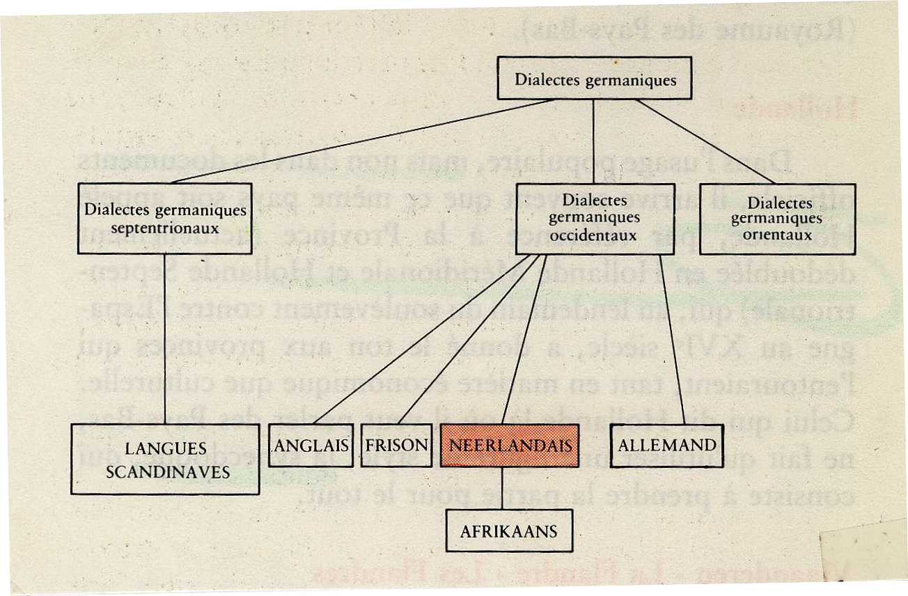

Les langues germaniques sont une branche de la famille des langues indo-européennes. Elles descendent toutes du proto-germanique. L'étude de ces langues se nomme la germanistique. Elles furent d'abord parlées par les peuples germaniques, qui vivaient au voisinage des Baltes, des Celtes et des Italiques et entrèrent en contact avec l'Empire romain sur ses confins.

Quelques langues germaniques...
Anglais
L'anglais, (en anglais : english) est une langue indo-européenne
germanique originaire d'Angleterre qui tire ses racines de langues du nord de l'Europe
(terre d'origine des Angles, des Saxons et des Frisons) dont le vocabulaire a été enrichi
et la syntaxe et la grammaire modifiées par le français anglo-normand, apporté par les Normands,
puis par le français avec les Plantagenêt. La langue anglaise est ainsi composée d'environ 29 %
de mots d'origine normande et française et plus des deux tiers de son vocabulaire proviennent du
français ou du latin. L'anglais est également très influencé par les langues romanes, en particulier
par l'utilisation de l'alphabet latin ainsi que les chiffres arabes.
Allemand
L'allemand, (en allemand : deutsch) est l'une des langues indo-européennes
appartenant à la branche des langues germaniques, parlée notamment en Allemagne, en Autriche,
en Suisse, au Liechtenstein, au Luxembourg, en Belgique et dans certaines régions limitrophes
des pays voisins. Du fait de ses nombreux dialectes, l'allemand constitue dans une certaine mesure
une langue-toit (Dachsprache). Aujourd'hui l’allemand a trois versions standard : standard allemand,
standard autrichien et standard suisse.
Néerlandais
Le néerlandais, (en néerlandais : Nederlands) est la langue officielle des Pays-Bas.
Il est, avec ses 25 millions de locuteurs natifs, la troisième langue germanique la plus parlée au monde,
après l'anglais et l'allemand. Il est la langue officielle des Pays-Bas et de leurs territoires d'outre-mer,
d'une partie de la Belgique et au Suriname.
Quelques langues scandinaves...
Suédois
Le Suédois (en suédois : svenska) est une langue scandinave parlée par environ 10,4
millions de locuteurs, principalement en Suède et en Finlande, les deux pays dont il est langue officielle.
Comme les autres langues scandinaves, il est issu du vieux norrois, la langue commune à tous les peuples germaniques
de Scandinavie à l'époque des Vikings. Il reste aujourd'hui mutuellement intelligible avec le danois et le norvégien.
La langue écrite et orale est standardisée, mais il subsiste des variantes régionales issues des anciens dialectes ruraux.
Danois
Le danois (en danois : dansk) est une langue germanique principalement parlée au Danemark par les Danois.
C'est la langue officielle du Danemark et des îles Féroé (à parité avec le féroïen), langue officielle locale dans la municipalité
autonome du Flensburg en Allemagne.Elle est aussi la langue seconde du Groenland, le danois est aussi une des langues officielles de
l'Union européenne. Il est généralement intelligible par les locuteurs du norvégien et du suédois et reste très enseigné comme langue
secondaire en Islande, ancienne dépendance danoise.
Norvégien
Le norvégien (en norvégien : norsk) est une langue germanique parlée en Norvège qui a pour racine historique
le vieux norrois, utilisé depuis le Moyen Âge en Scandinavie. Le vieux norrois est aussi l'ancêtre direct du danois et du suédois modernes
et a exercé une influence sensible sur le vieil anglais pour former l'anglais[2] ; en France, il a fourni à l'ancien normand certains éléments
de vocabulaire.
Ici, vous retrouverez une vidéo expliquant l'histoire des langues germaniques